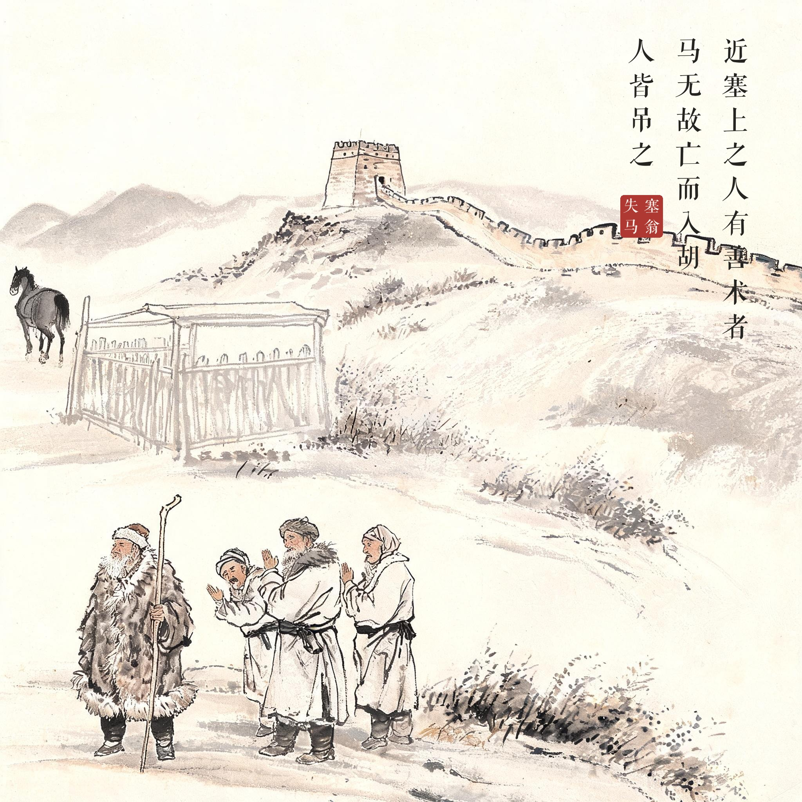
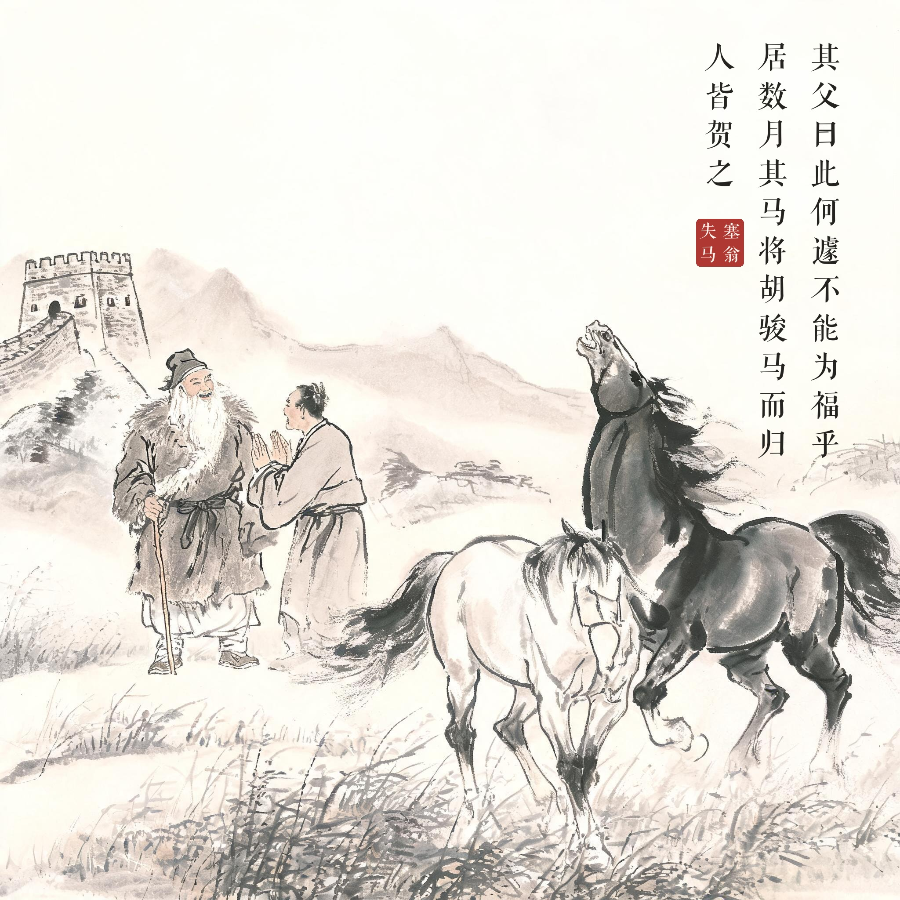
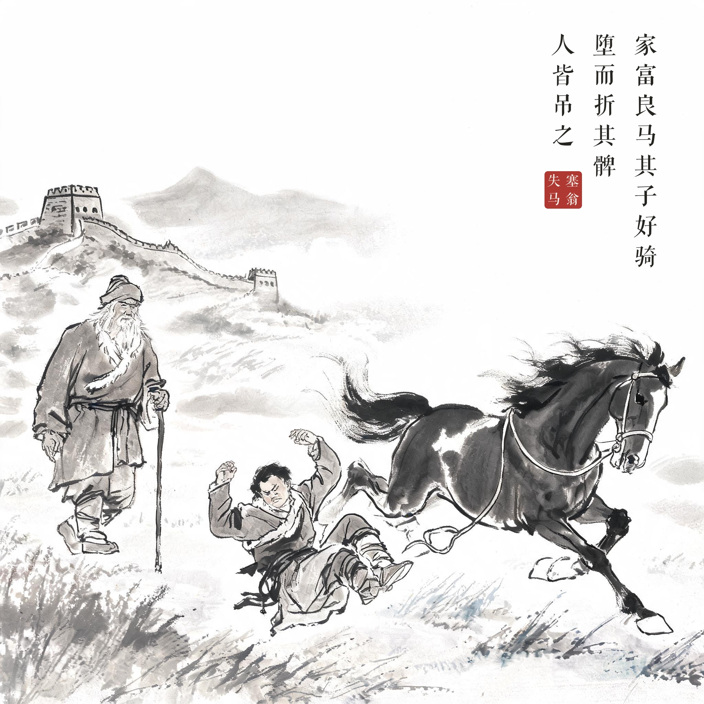
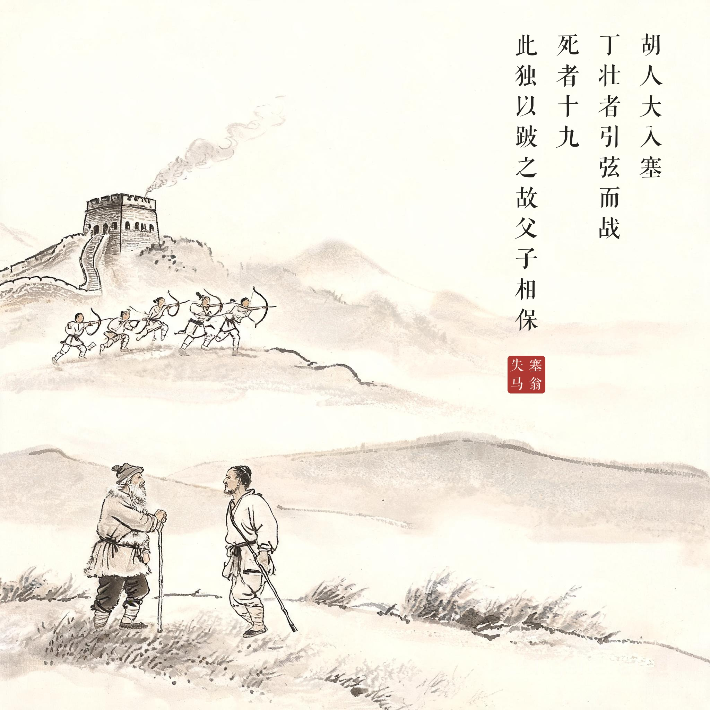

《淮南子 · 人间训》
近塞上之人有善术者，马无故亡而入胡，人皆吊之。其父曰：此何遽不能为福乎。居数月，其马将胡骏马而归，人皆贺之。其父曰：此何遽不能为祸乎。家富良马，其子好骑，堕而折其髀，人皆吊之。其父曰：此何遽不能为福乎。居一年，胡人大入塞，丁壮者引弦而战，死者十九，此独以跛之故，父子相保。
边塞附近有个精通术数的老翁，他家的马无缘无故跑进了胡地，乡邻都来安慰。老翁说："这怎么就不会变成福气呢？"过了几个月，那马带着一匹胡地骏马回来了，乡邻都来道贺。老翁说："这怎么就不会变成灾祸呢？"家里好马多了，儿子爱骑马，一次摔下来折断了大腿骨，乡邻又来安慰。老翁还是说："这怎么就不会变成福气呢？"一年后，胡人大举入侵边塞，青壮男子都拉弓参战，十有九死，唯独这家父子因为儿子瘸腿免于征战，父子得以保全。
祸与福相互依存、相互转化；坏事在一定条件下可引出好结果，好事也可引出坏结果——"塞翁失马，焉知非福"。